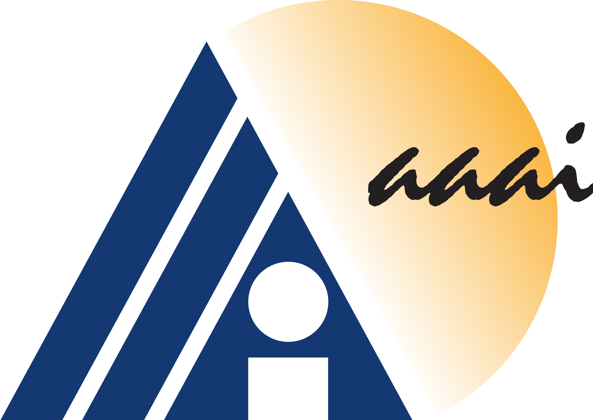

Most explainability methods cannot provide insight beyond the given data which necessitates additional information about the context. One solution is to integrate prior knowledge into the machine learning pipeline. This talk presents three general approaches that integrate knowledge either into the machine learning pipeline, into the explainability method or derive knowledge using explanations. Each approach is illustrated with an example from the sciences to demonstrate the potential of prior knowledge integration.
XAI4Sci: Explainable machine learning for sciences
About
As the deployment of machine learning technology becomes increasingly common in applications of consequence, such as medicine or science, the need for explanations of the system output has become a focus of great concern. Unfortunately, many state-of-the-art models are opaque, making their use challenging from an explanation standpoint, and current approaches to explaining these opaque models have stark limitations and have been the subject of serious criticism.
The XAI4Sci workshop aims to bring together a diverse community of researchers and practitioners working at the interface of science and machine learning to discuss the unique and pressing needs for explainable machine learning models in support of science and scientific discovery. These needs include the ability to (1) leverage machine learning as a tool to make measurements and perform other activities in a manner comprehensible to and verifiable by the working scientists, and (2) enable scientists to utilize the explanations of the machine learning models in order to generate new hypotheses and to further knowledge of the underlying science.
The XAI4Sci workshop invites researchers to contribute short papers that demonstrate progress in the development and application of explainable machine techniques to real-world problems in sciences (including but not limited to, physics, materials science, earth science, cosmology, biology, chemistry, and forensic science). The target audience comprises members of the scientific community interested in explainable machine learning and researchers in the machine learning community interested in scientific applications of explainable machine learning. The workshop will provide a platform to facilitate a dialogue between these communities to discuss exciting open problems at the interface of explainable machine learning and science. Leading researchers from both communities will cover state-of-the-art techniques and set the stage for this workshop.
AAAI
 The XAI4Sci: Explainable machine learning for sciences 2023 workshop will be held on February 26, 2024 at the at the Vancouver Convention Centre — West Building in Vancouver, British Columbia, Canada as a part of the 38th AAAI Conference on Artificial Intelligence (AAAI-24). The AAAI-24 and all workshops are expected to take place in-person.
Schedule
9:00am - 10:30am Session
- 9:00 - 9:30: Katharina Beckh (Fraunhofer Institute for Intelligent Analysis and Information Systems)
- 9:30 - 10:00: Kevin Li (Google DeepMind and University College London)
The ability to adequately handle uncertainty stands as a defining characteristic of intelligent systems. When faced with novel experiences, our brains adapt to and seek patterns amidst unfamiliar signals. This talk explores how uncertainty is represented in the human brain and its implications for learning and adaptation in artificial agents. In our recent work, we investigate human limitations in modeling uncertainty in the environment and propose a bounded rational model to explain these behaviors. Furthermore, we present a theoretical framework for understanding how neural systems could manage uncertainty, applying these insights to artificial agents trained in both supervised and reinforcement learning contexts. Through this interdisciplinary approach, we gain deeper insights into the nature of uncertainty computation and its impact on intelligent behavior.
- 10:00 - 10:30: P. Jonathon Phillips (Information Access Division, National Institute of Standards and Technology)
Since the computer vision community adopted deep convolutional neural networks (DCNNs), psychologists have explored DCNNs as models for the face processing system in humans (FPiH). A DCNN-based face identification algorithm takes a face image as input and returns an identity face code. A face code is a high-dimensional vector representing a face's identity. Using these DCNNs engineered for face identification, psychologists investigated whether these DCNNs are models for the FPiH. In addition to identifying faces, the FPiH performs numerous other tasks that include analyzing expressions, making social judgments, and assessing the pose of a face. Surprisingly, these investigations found that the identity face codes produced by DCNNs encode information about a face's expression, pose, and social judgment information (which are intrinsic to faces), but also information about illumination and the type of sensor that took the face image (which are extrinsic to faces). The talk will cover the experiments that led to these discoveries and their impact on existing psychological and neurological models. Since existing DCNN architectures only model a portion of the FPiH, the talk concludes by discussing the challenges of modeling the complete FPiH and designing experiments to confirm that deep learning models are valid. (Joint work with David White of UNSW-Sydney.)
10:30am - 11:00am Break (Light refreshments available near session rooms)
11:00am - 12:30pm Session
- 11:00 - 11:30: Kyle Cranmer (Physics Department, University of Wisconsin-Madison)
I will discuss a few real world examples of projects focusing on inductive bias and architectural choices that encode domain knowledge and for facilitate interpretability. I will give an optimistic narrative of this approach and highlight some the pitfalls that can be encountered.
- 11:30 - 12:00 Lightning session for poster presenters
- 12:00 - 12:30 Poster session
12:30pm - 2:00pm Lunch (On your own; no sponsored lunch provided)
2:00pm - 3:30pm Session
- 2:00 - 2:30: Cynthia Rudin (Department of Electrical and Computer Engineering, Duke University)
Breast cancer is the most commonly diagnosed cancer worldwide, impacting millions of women each year. Population-wide breast cancer screening programs currently aim to regularly screen women over 40, normally annually. If we could predict whether a given woman will develop cancer in the next 5 years, we could personalize this screening burden without increasing risk. A recent black box model, Mirai, achieved impressive performance for 5-year breast cancer risk prediction, but was completely opaque in its reasoning. While exploring Mirai, we discovered something surprising: Mirai's predictions were almost entirely based on localized dissimilarities between left and right breasts. Guided by this insight, we showed that dissimilarity alone can predict whether a woman will develop breast cancer in the next five years, developing an interpretable model that does just that. This work, entitled "AsymMirai: Interpretable Mammography-Based Deep Learning Model for 1- to 5-year Breast Cancer Risk Prediction, Radiology" was recently accepted to Radiology. It is joint work with Jon Donnelly, Luke Moffett, Alina Barnett, Hari Trivedi, Fides Regina Schwartz, and Joseph Lo.
- 2:30 - 3:00: Peter A. Stella, MD (NYU Grossman School of Medicine)
AI derived predictive models offer the potential to significantly improve decision makingin clinical medicine. In these high stakes applications, it is critical for that the models be both safe and perceived as safe. We discuss how explainable methods can address these twin issues effectively, with emphasis on several aspects of clinical data which tend to create specific patterns of “error” in model building.
- 3:00 - 3:30: Aaswath P. Raman (Samueli School of Engineering, University of California Los Angeles)
Over the last thirty years the newly emerging fields of nanophotonics and metamaterials have introduced new approaches to designing artificial materials that respond to electromagnetic waves in highly unusual ways, not achievable using naturally accessible materials. This in turn has enabled a range of new device capabilities, including high-precision optical sensors, photonic integrated circuits, new coatings for energy applications, and even exotic possibilities like invisibility cloaks. These unusual capabilities arise from the ability to take conventional materials and by structuring or patterning them at length-scales that are either similar to, or significantly smaller than, the wavelength of light one wishes to interact with.
In this context, a range of optimization and machine learning approaches have been demonstrated to serve both as surrogate solvers that take a nanophotonic design and predict its optical response, as well as for inverse design, where a nanophotonic design is optimized given an input target optical response. However, a fundamental challenge has emerged: the complex designs that arise from these inverse design approaches can work well, but it is difficult to understand why they work and to further advance basic understanding in the field. In this talk, I will introduce our work on using explainable AI approaches to both uncover why complex, often freeform, structured material shapes are able to deliver particular optical responses. Additionally, I will show how an explainable AI approach (Deep SHAP) can allow us to both understand the landscape navigated a conventional optimization algorithm, and to enhance its ability to perform inverse design. I will conclude by discussing the potential for explainable AI approaches in the physical sciences more broadly, and how they might integrate with physics-informed approaches such as PINNs to enable both improved optimization as well as scientific discovery.
3:30pm - 4:00pm Break (Light refreshments available near session rooms)
4:00pm - 5:00pm Session
- 4:00 - 4:30: Yue Shi Lai (Nuclear Science Division, Lawrence Berkeley National Laboratory)
We implement an explainable and physics-aware Generative Adversarial Network (GAN) that can infer the underlying physics of high-energy particle collisions using the information encoded in the energy-momentum four-vectors of the final state particles. This proof-of-concept shows how GAN can be constructed as a white box AI, which not only reproduces the final distribution of particles, but also has the ability to reveal the physical laws needed to imitate the observation. Using Monte Carlo generated collision events, we show how the underlying parton branching mechanism, i.e. the Altarelli-Parisi splitting function, the ordering variable of the shower, and the scaling behavior can be recovered from the model. While the current work is primarily focused on the perturbative physics of the parton shower, we foresee that white box construction of machine learning models can be a method to study wide areas of high energy physics phenomenology that are currently difficult to address from first principles.
- 4:30 - 5:00 Panel discussion and closing remarks
XAI4Sci Proceedings
The XAI4Sci Workshop Proceedings (XAI4Sci Proceedings) is the written record of the scholarly work presented at the XAI4Sci: Explainable Machine Learning for Sciences workshop. The proceedings cover the full range of experimental and theoretical research on applications of explainable machine learning techniques to real-world problems in sciences, including but not limited to, physics, materials science, earth science, cosmology, biology, chemistry, medicine, and forensic science; explainable machine learning; and applied machine learning.
 We are pleased to announce that the XAI4Sci workshop has partnered with the Institute of Physics Publishing journal
Machine Learning: Science and Technology (MLST) to publish a focus issue
on Explainable machine learning in sciences. The focus issue will look to publish a selection of papers
at the interface of science and machine learning, focusing on tackling the unique and pressing needs for explainable machine learning models in support
of science and scientific discovery.
We are pleased to announce that the XAI4Sci workshop has partnered with the Institute of Physics Publishing journal
Machine Learning: Science and Technology (MLST) to publish a focus issue
on Explainable machine learning in sciences. The focus issue will look to publish a selection of papers
at the interface of science and machine learning, focusing on tackling the unique and pressing needs for explainable machine learning models in support
of science and scientific discovery.
Organizers
-
Justyna ZwolakNIST
-

Craig GreenbergNIST
-
Rich Caruana Microsoft Research